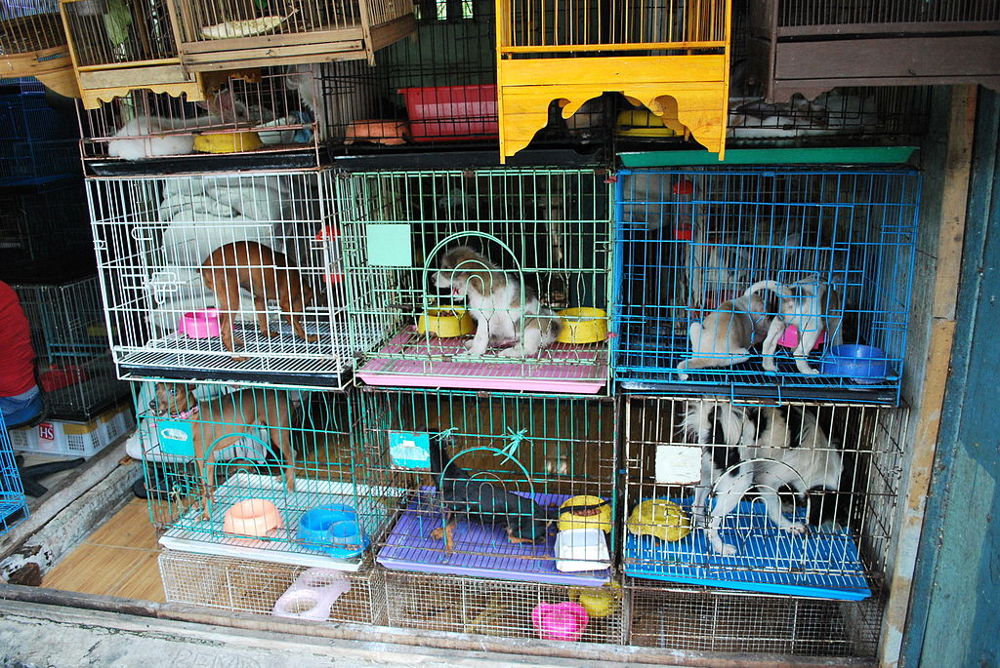

The path a puppy takes from birth in the mill to its final owner is commonly referred to as the “puppy pipeline.” For most dogs, the pipeline includes the truck (transport), the brokerage and/or the pet shop. Investigations have uncovered abuse and neglect at many points in this pipeline, from improper transportation to unsanitary housing.
- Almost half of mill puppies are purchased by pet shops, chains, and superstores.
- 90% of pet store dogs were born in puppy mills.
- The USDA estimates that just over 2 million puppies are sold in pet stores.
- Investigators routinely find ill, underweight, and abused animals these pet stores.
- Breeders’ associations discourage or disallow their members from selling to pet stores.
- 34% of pet dogs come from breeders.
- Some mills sell their animals in states where puppy mills are illegal or strictly regulated.

Terminology
Terms used along the puppy pipeline can be confusing. Animal rights groups refer to this language as “doublespeak” and claim that it is deliberately designed to mislead pet owners.
- A “breeder” may refer to any person who arranges for two animals to produce spawn.
- A “dealer” or “broker” is an individual or organization that buys mill puppies and sells them to stores, to other brokers, or directly to consumers.
- “USDA Class A” refers to a licensed breeder that only sells animals bred in their facility.
- “USDA Class B” refers to a licensed broker that purchases and/or resells warm-blooded animals.
- “Transporters” are people who move animals from one place to another.
How and Where Mill Puppies are Sold
Puppy mills’ biggest customers are not pet owners. Pet shops, chains, and superstores purchase dogs in mass amounts, often indiscriminately. Brokers make it more difficult for consumers to determine the origin of a puppy. Unhealthy dogs are such a problem in these stores that state and federal agencies warn consumers about purchasing from such stores, with some even passing laws to reduce instances of animal cruelty.
- For every 50 licensed breeders, there are 13 licensed brokers.
- 2/3 of pet store puppies are shipped by brokers.
- Many Class B animal brokers have been caught breeding animals themselves.
- Legitimate breeders are highly unlikely to sell their animals using brokers.
- More and more, brokers are moving online to avoid inspection and transparency.
Online Brokers
Watchdog groups report a steady increase in online brokerages – for which there are virtually no regulations – masquerading as legitimate breeders or even as animal shelters/rescues.
-
Online brokers often refer to themselves as “puppy concierges” or “puppy finders,” using their web site to “match” a user with one or more breeders.
-
36% of dog owners use the internet to find their pet.
-
The USDA reports a higher rate of illness among dogs purchased online than those purchased in person.
- The Better Business Bureau reports a high rate of scam complaints regarding online pet sales.
- The Humane society received 5,000 complaints between 2007 and 2017 about online pet sales operations.